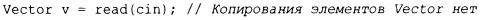

⇐4.2.2 Контейнер 4.3 Абстрактные типы⇒
Контейнер существует для хранения элементов, поэтому очевидно, что нам нужны удобные способы добавления элементов в контейнер. Мы можем создать Vector с соответствующим количеством элементов, а затем выполнить их присваивание, но обычно другие способы более элегантны. Здесь я просто упомяну двух фаворитов.
Они могут быть объявлены следующим образом:
Функция push_ back() полезна для добавления произвольного количества элементов. Например:
Входной цикл завершается при достижении конца файла или при ошибке форматирования. До тех пор, пока это не произойдет, каждое прочитанное число добавляется в Vector, так что в конце работы функции размер вектора v равен количеству прочитанных элементов. Я использовал цикл for, а не более удобный цикл while, чтобы ограничить область видимости переменной d, ограниченную циклом. Предоставление классу Vector конструктора перемещения, обеспечивающего дешевый возврат потенциально огромного количества данных из функции read ( ) , объясняется в §5.2.2:
Способ представления std: : vector для того, чтобы сделать эффективными операцию push_back () и другие операции, изменяющие размер vector, представлен в § 11.2.
Класс std::ini tializer_list используется для определения конструктора на основе списка инициализации и представляет собой тип стандартной библиотеки, известный компилятору: когда мы используем список в фигурных скобках ( { } ), такой как { 1, 2, 3, 4 } , компилятор создает объект типа initializer list для предоставления его программе. Так что можно написать:
Конструктор со списком инициализации класса Vector может быть определен следующим образом:
К сожалению, стандартная библиотека использует для размеров и индексов беззнаковые целые числа, поэтому мне нужно использовать уродливый static_cast для явного преобразования размера списка инициализаторов в int. Это избыточно педантично, потому что вероятность того, что количество элементов в рукописном списке больше, чем наибольшее целое число (32 767 для 16-разрядных целых чисел и 2 14 7 483 64 7 для 32-разрядных целых чисел), очень невелика. Однако система типов здравым смыслом не обладает. Она знает о возможных значениях переменных, а не об их действительных значениях, поэтому может жаловаться, даже если фактическое нарушение отсутствует. Однако такие предупреждения иногда могут спасать программиста от нехороших ошибок.
static_cast не проверяет значение, которое конвертирует; считается, что программист знает, что делает, и использует его правильно. Это предположение не всегда правильное, поэтому, если у вас есть сомнения, проверьте значение. Явных преобразований типов (часто называемых приведения.ми, чтобы напоминать вам, что они могут привести не туда ) лучше избегать. Попытайтесь использовать непроверяемые приведения только на самом низком уровне системы. Они чреваты ошибками.
Другими приведениями являются reinterpret cast для трактовки объекта как простой последовательности байтов и const cast для "отбрасывания const". Разумное использование системы типов и хорошо продуманных библиотек позволяет исключить непроверяемые приведения в программном обеспечении более высокого уровня.